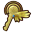
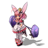
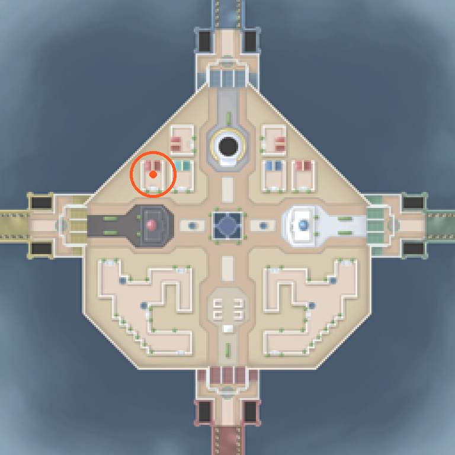
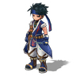
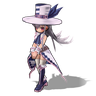

Tutorial Quests
Lessons from Amis on her airship, which show new characters around the game.
On this page
How it works
-
Every lesson starts and ends with Amis in Amis' Airship. Talk to her to start the next lesson.
 Amis
Amis
Uptown -
To board the airship, talk to Amis in Uptown.
Walkthrough
1. First Time Job
- Use the steering wheel on the airship to go down to Uptown.
-
Find Dark Feather Alma on Acropolis East Bridge. Take his quest, Dark Feather Request, finish it and bring him what he asks for.
-
Take the stairs at any bridge down to Downtown and talk to Dark Feather Alma.
-
Return to Amis.
 Dark Feather Alma
Dark Feather Alma Dark Feather Alma
Dark Feather Alma
2. Nice Gift
-
Go east to Acronia Forest and find Momo Alma.
-
Collect the
 Milk that Bawoo Alma asks for and give it to Momo Alma.
Milk that Bawoo Alma asks for and give it to Momo Alma. -
Talk to Bawoo Alma on Fareast Main Street.
-
Go to the Airship Engineer on the same street and talk to Bawoo Alma. Use the
 Bawoo Stamp there.
Bawoo Stamp there. -
Go to the Cafe Stamp Manager in Uptown and listen to Bawoo Alma about stamps.
-
Return to Amis.
 Bawoo Alma
Bawoo Alma
 Bawoo Alma
Bawoo Alma3. A Big Deal
-
Follow Shabotan Alma and Necro Armor Alma to the front of the Guild Palace Lobby 1F, Uptown. They teach you about jobs.
-
Return to Amis.
-
Talk to the Beginner Quest Counter in the school, then talk to her again.
 Beginner Quest Counter
Beginner Quest CounterUptown -
Take a quest from her, finish it and report back to her.
 Shabotan Alma
Shabotan Alma4. Fun Friend
-
Go to the Soul Storage in north Downtown, where Loki Alma waits.
-
Inside, talk to Loki Alma and borrow a soul.
-
Back on the airship, take the quest Get My Bag!
-
Talk to the Troubled West Faction Soldier in west Downtown and go with him to Bee Village.
-
Return to Amis.
 Loki Alma
Loki Alma5. Exciting Trip
-
Follow Cockko Alma and Balulu Alma to Acronia Eastern Plains.
-
Take the lost child to the village at East Cape.
-
Meet the Airship Engineer on Fareast Main Street, where Balulu Alma waits.
-
Talk to the Big Collector Merchant in Acronia Eastern Plains and do what he asks.
-
Return to Amis.
 Balulu Alma
Balulu Alma
 Balulu Alma
Balulu Alma6. Wishes & Feelings
-
Talk to Seahorse Alma in west Downtown.
-
In the Card Institute, talk to Seahorse Alma or Tarantula Alma to buy a picture frame.
-
Return to the school and talk to Amis to decorate the frame.
 Seahorse Alma
Seahorse Alma7. Pleasant Souvenir
-
Visit Pefang Alma at each of these shops in turn:
Stop Place Weapons Weapon Shop, south Downtown Armor The stall on the south side of central Downtown Adventure supplies The stall on the north side of central Downtown Accessories Jewelry Shop, north Uptown Tailoring Seamstress' House, north Uptown -
Return to Amis.
8. Gloomy Adventure
-
From Acronia Eastern Plains, go to Acronia Eastern Beach and talk to Salamander Alma.
-
Split up with Salamander Alma and Flyfish Alma and find the Wounded Bawoo.
-
Return to Amis.
-
Use a

Warp Key E to go back to Continental Cave B1F and follow the Wounded Bawoo. -
Return to Amis.
 Salamander Alma
Salamander Alma Wounded Bawoo
Wounded Bawoo
9. Fashionable
-
Get a Lv 35 job armor and show it to Minidoo Alma in the school. See the Lv 35 Armor Quest.

Minidoo AlmaUptown -
Go to the area next to the Seamstress' House in northwest Uptown.

Uptown — Seamstress' House -
Return to Amis.
10. Conveyed Warmth
-
Talk to Weapon Enhancement Instructor in the school.

Weapon Enhancement InstructorUptown -
Talk to Mummy Alma in Uptown, next to the ECO Ticket Collector, to get enhancement crystals.
-
Return to Amis.
 Mummy Alma
Mummy Alma11. Where's The Heart
-
Talk to ? ? ?, the picture story show, in ...In a Dream...?.

? ? ? -
Return to Amis.
-
Talk to Crasher Bakia in west Downtown and go to the Card Institute.
-
Put an IRIS card into the slot, then talk to Automedic Alma or Draki Alma. See Iris Cards.
-
Return to Amis.
 Crasher Bakia
Crasher Bakia12. Time of Departure
- Ask Amis about Alma.
- Raise your Tiny Zero to Lv 50 or higher, then talk to Amis with it.